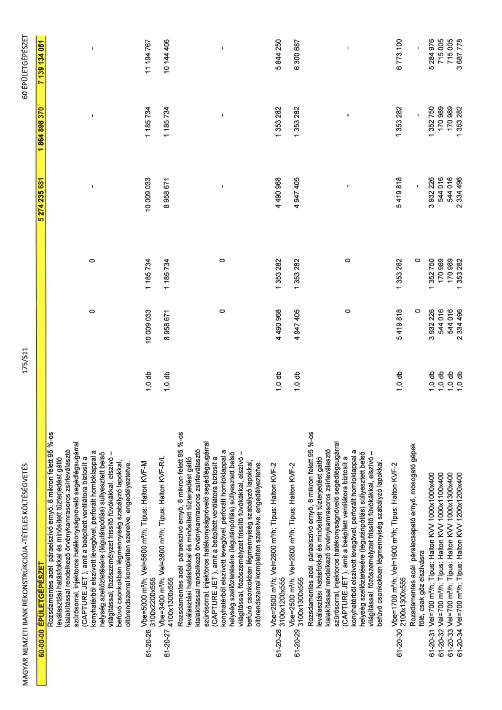

| Tétel | Menny. | Egys. | Anyag e.ár (net HUF) | Díj e.ár (net HUF) | Anyag összesen (net HUF) | Díj összesen (net HUF) | Anyag+Díj összesen (net HUF) |
|---|---|---|---|---|---|---|---|
| 61-20-26 Rozsdamentes acél páraelszívó ernyő, 8 mikron felett 95%-os leválasztási hatásfokkal... Típus: Halton KVF-M 3100x2200x555 | 1,0 | db | 10 009 033 | 1 185 734 | 10 009 033 | 1 185 734 | 11 194 767 |
| 61-20-27 Rozsdamentes acél páraelszívó ernyő... Típus: Halton KVF-R/L 4100x1300x555 | 1,0 | db | 8 958 671 | 1 185 734 | 8 958 671 | 1 185 734 | 10 144 406 |
| 61-20-28 Rozsdamentes acél páraelszívó ernyő... Típus: Halton KVF-2 3100x1200x555 | 1,0 | db | 4 490 968 | 1 353 282 | 4 490 968 | 1 353 282 | 5 844 250 |
| 61-20-29 Rozsdamentes acél páraelszívó ernyő... Típus: Halton KVF-2 3100x1300x555 | 1,0 | db | 4 947 405 | 1 353 282 | 4 947 405 | 1 353 282 | 6 300 687 |
| 61-20-30 Rozsdamentes acél páraelszívó ernyő... Típus: Halton KVF-2 2100x1300x555 | 1,0 | db | 5 419 818 | 1 353 282 | 5 419 818 | 1 353 282 | 6 773 100 |
| 61-20-31 Vel=700 m3/h; Típus: Halton KVV 1000x1000x400 | 1,0 | db | 3 932 226 | 1 352 750 | 3 932 226 | 1 352 750 | 5 284 976 |
| 61-20-32 Vel=700 m3/h; Típus: Halton KVV 1000x1100x400 | 1,0 | db | 544 016 | 170 989 | 544 016 | 170 989 | 715 005 |
| 61-20-33 Vel=700 m3/h; Típus: Halton KVV 1000x1300x400 | 1,0 | db | 544 016 | 170 989 | 544 016 | 170 989 | 715 005 |
| 61-20-34 Vel=700 m3/h; Típus: Halton KVV 1200x1200x400 | 1,0 | db | 2 334 496 | 1 353 282 | 2 334 496 | 1 353 282 | 3 687 778 |
